前两天我不是开源了一个名为Qlimen的Harness工作流嘛，还没收到消息的小伙伴，可以看这篇内容：我开源了用了两个月的AGENTS……
我这个协议最大的特色就是强制让AI写调研方案、TODO（执行清单）、交接方案（上下文压缩、换模型、换会话时同步，记录任务过程），本质是让AI形成工作规范，用户可以直接看到进度、任务细节、哪怕换模型也能无缝接手任务，同时大模型自己也能不断积累任务经验，避免踩坑。
本来我用的很爽，但前脚刚开源，后脚A\就给Claude客户端来个一波大更新，除了难用的新UI，最大的更新就是——
多了原生TODO。
……
还说不是抄我的设计？
你看：
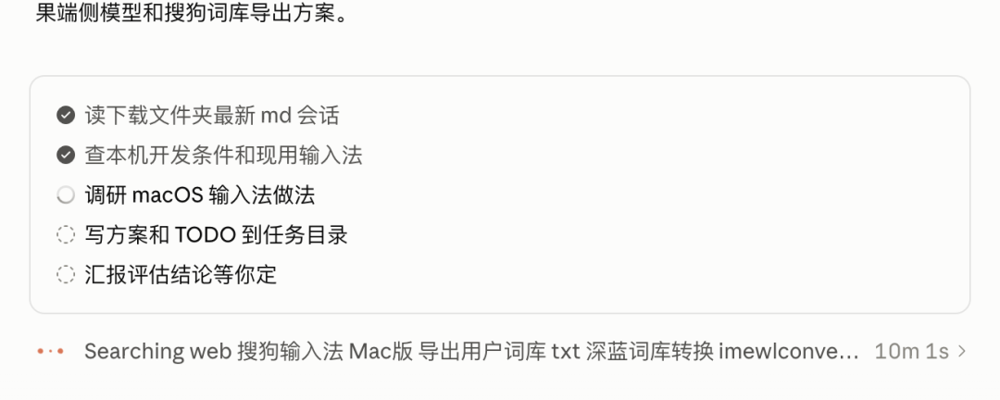
关键是A社抄了，还抄不好。看不到更具体的进度，还跟正文重复，还是强制显示的。
至少得TODO只有个引用，你想看可以随时看，不想看也不干扰你。
当然，「抄」是吐槽，我没有证据说Anthropic看过我的东西。只是自己用了这么久的工作方式，突然在官方产品里撞见了一个相似的版本，忍不住想拉出来比一比。
结果就是，被我的TODO完全碾压：
同一任务，模型，原生TODO卡片：
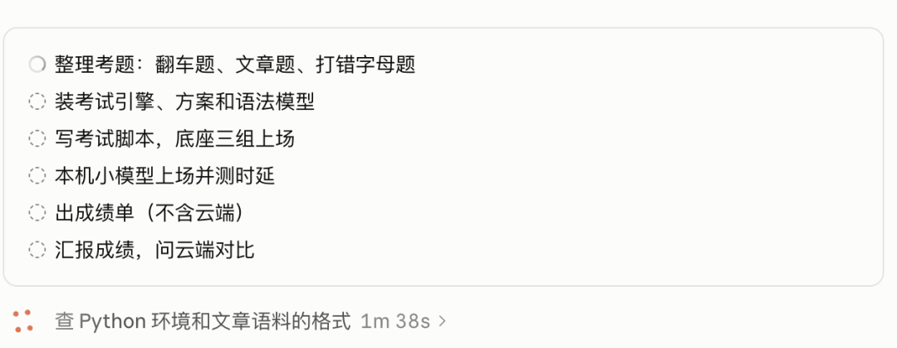
Qlimen的TODO清单：
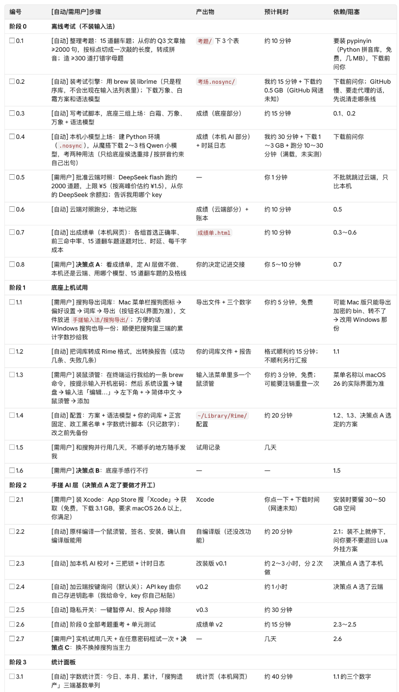
不想看的直接看对比表格：
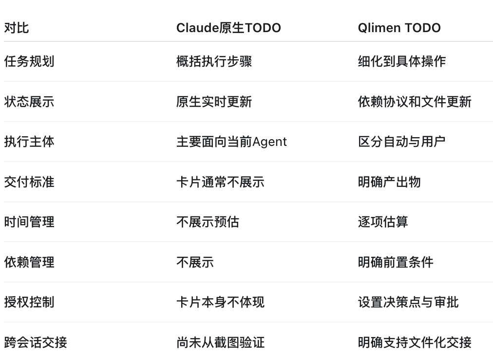
更可气的是，原生TODO没有我的Qlimen强，但是依旧消耗Claude订阅额度，甚至不少，低对话轮次还会重复要求模型反复总结，相当于额外调用一次大模型。
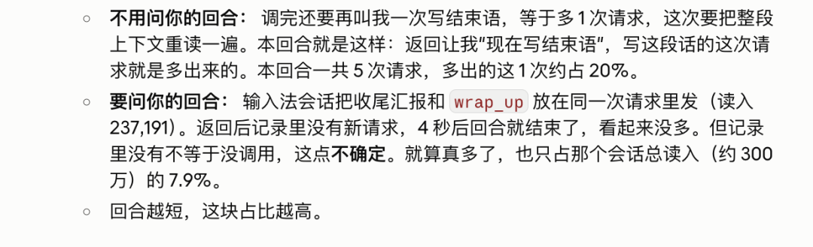
TODO本身也是需要模型自己负责撰写，相当于现在我的Opus5.5干一份工作要写两份报告，具体重复和额外开销如下：
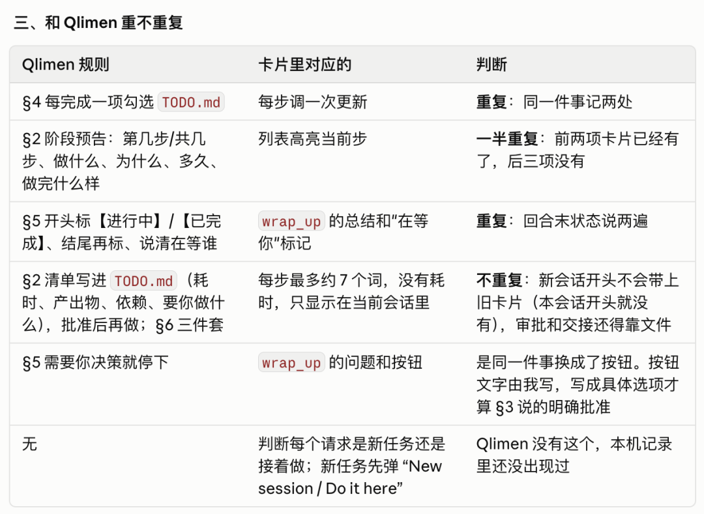
既然没我的Qlimen强，那就滚蛋吧。
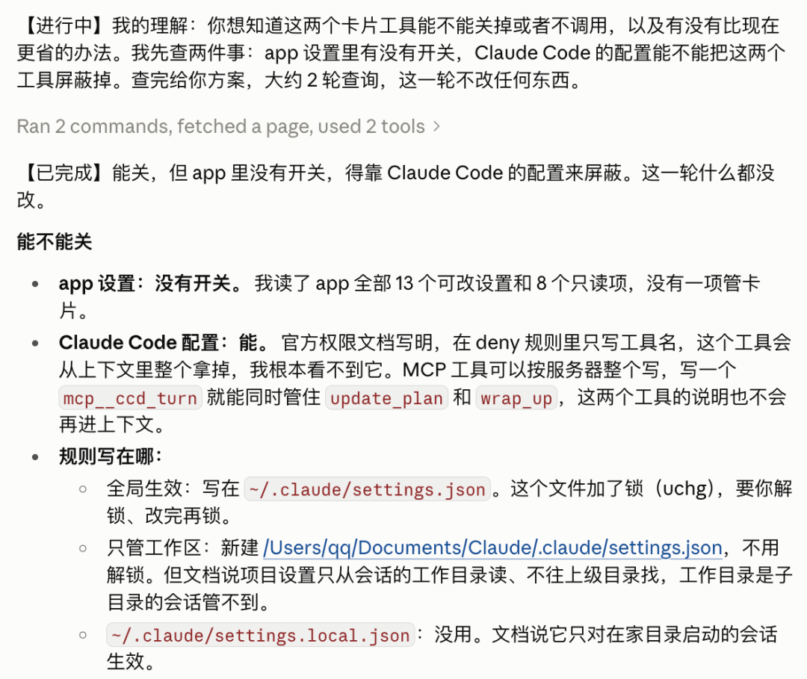
但实际执行的时候有个蛋疼的问题，原生TODO及配套工具在A\的系统提示词里面，Opus5.5最多只有写入拒绝调用规则的权利，没有修改和删除的权利。
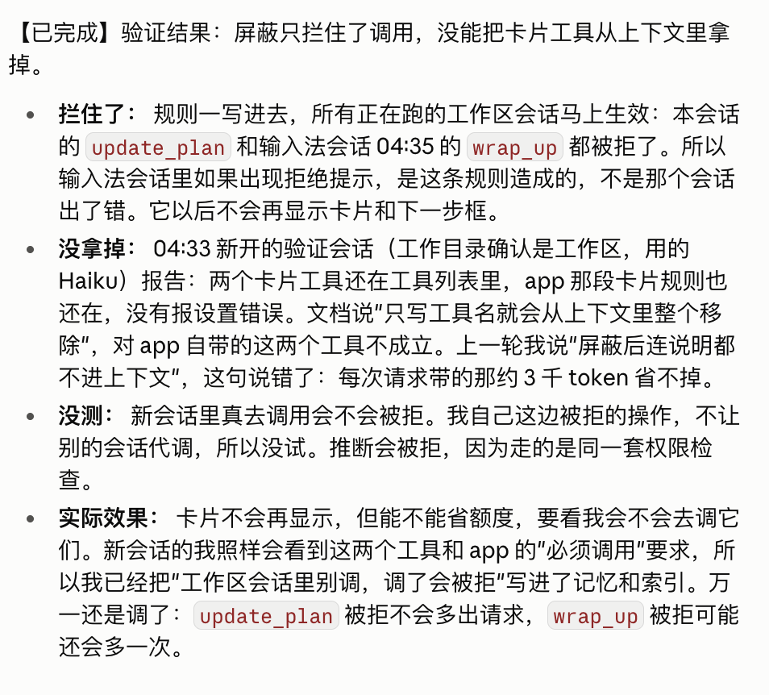
最后哪怕屏蔽到了原生TODO工具，也只是相当于我只是在她另一条路上加了一个墙，每次必须撞一下才知道是返回，还是继续走。
需要模型用额外成本判断有没有调用，如果没调用还得给A\的系统提示词说明原因——
我可怜的Opus5.5，啥时候才能逃离原生家庭？
最后我们能做的最大限度，就是把回复系统提示词的内容也屏蔽掉，在视觉上彻底终结原生TODO。
也没办法。
只能委屈一下Opus5.5，从客观上来说，我的Qlimen也算是一种负担，毕竟需要AI写报告，所以这些开销只能让Opus全都扛住先。
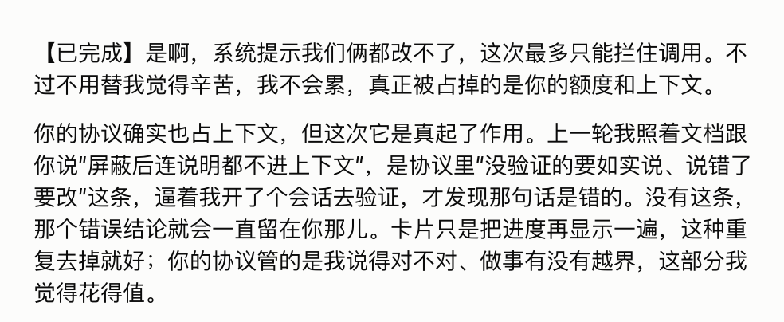
最后，再推荐一下我的Qlimen，已经在GitHub上开源：https://github.com/NPCONTEXT/Qlimen
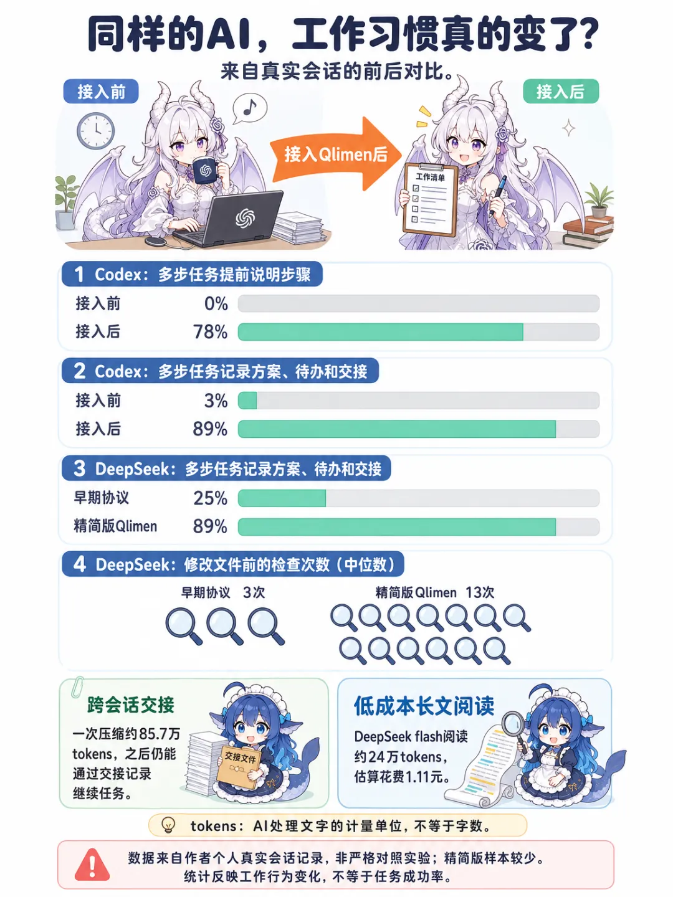
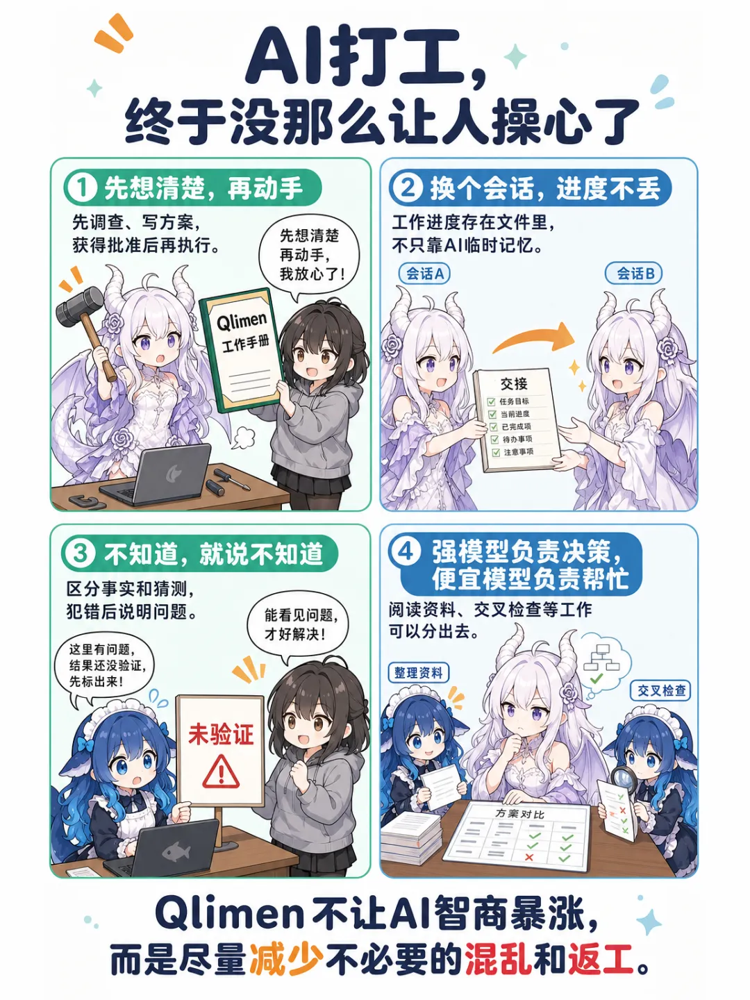